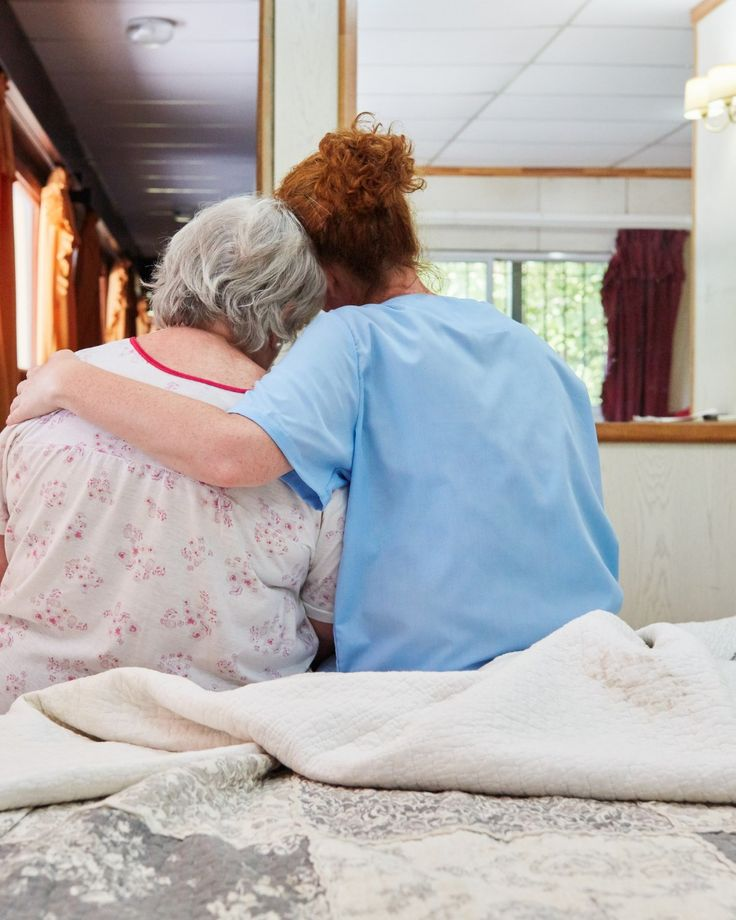
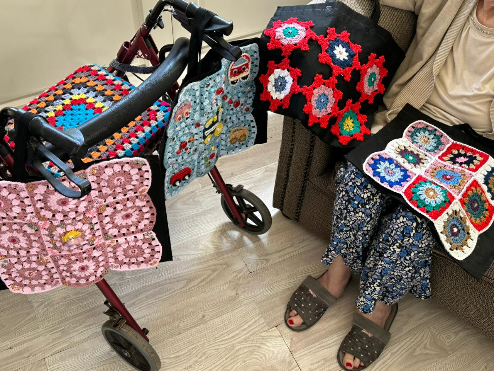
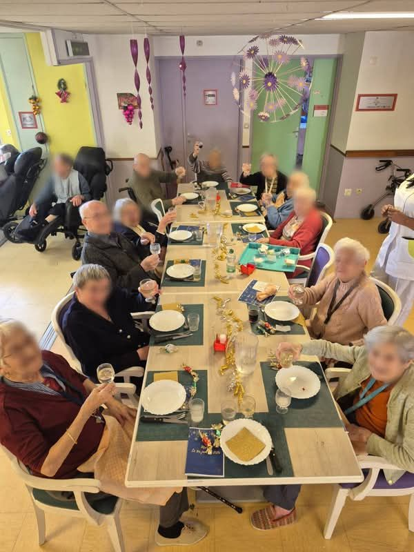
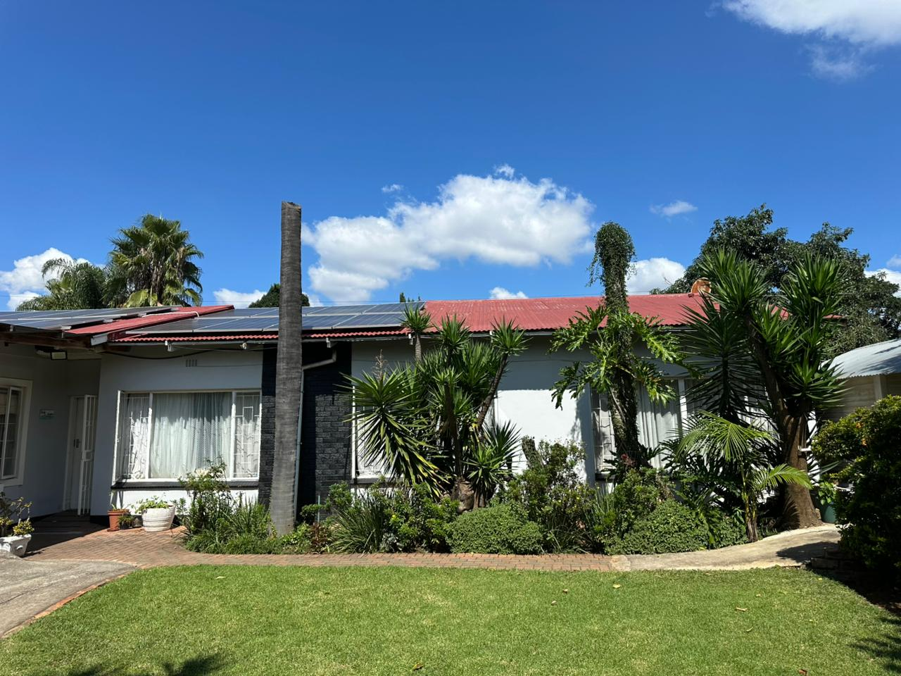

Professional Nursing Around the Clock
Our team of registered nurses and auxiliary nurses are on duty 24 hours a day, 7 days a week. Whether it is routine monitoring, medication administration, or responding to a health concern, our nursing staff are always present and prepared.
- Registered and qualified nursing staff on all shifts
- Regular health monitoring and vital signs assessments
- Medication management and administration
- Wound care and post-operative support
- Emergency response protocols and equipment

Dignity in Every Daily Moment
Our personal care services are designed to support residents with activities of daily living while preserving their dignity, independence, and sense of self. Our caregivers are trained to provide compassionate, respectful assistance.
- Bathing, showering, and personal hygiene
- Dressing and grooming assistance
- Mobility support and transfer assistance
- Continence management
- Oral hygiene and foot care
- Personalised care plans reviewed regularly

Specialised Support for Cognitive Wellbeing
Our dedicated Memory Care unit provides a secure, structured, and stimulating environment for residents living with dementia, Alzheimer's disease, or other memory-related conditions. We focus on maintaining quality of life, independence, and dignity.
Through activities like arts and crafts,such as the handmade crochet pieces shown,we encourage creativity, gentle stimulation, and emotional connection. These familiar, hands-on activities help residents stay engaged while bringing comfort and joy.
- Secure, purpose-designed memory care unit
- Specially trained dementia care staff
- Engaging cognitive stimulation activities, including creative crafts
- Structured daily routines to reduce anxiety
- Family counselling and support groups
- Reminiscence therapy and sensory activities

Health Monitoring and Medical Support
We work closely with GPs, specialists, and allied health professionals to ensure comprehensive medical care for every resident. Regular health assessments and proactive monitoring ensure issues are identified and addressed early.
- Regular GP visits and health assessments
- Physiotherapy and occupational therapy
- Podiatry, optometry, and dental referrals
- Electronic health records and telehealth
- Speech therapy and swallowing assessment

Nourishing Every Body and Soul
Food is central to wellbeing and enjoyment. Our head chef and dietitian work together to create menus that are nutritionally balanced, culturally sensitive, and genuinely delicious. Mealtimes are social occasions we celebrate every day.
- Three chef-prepared meals and two snacks daily
- Dietitian-approved menus
- Accommodates all dietary needs and allergies
- Cultural and religious dietary requirements respected
- Therapeutic diets (diabetic, renal, cardiac-friendly)
- Texture-modified meals for swallowing difficulties

A Place That Truly Feels Like Home
Our rooms and communal areas are thoughtfully designed to be comfortable, safe, and homely. We encourage residents to personalise their rooms and consider Neli-Rose their home — because it is.
- Single and shared room options available
- En-suite bathroom facilities
- Spacious lounges and garden areas
- All utilities, laundry, and housekeeping included
- Emergency call systems in all rooms
- Wi-Fi and entertainment facilities